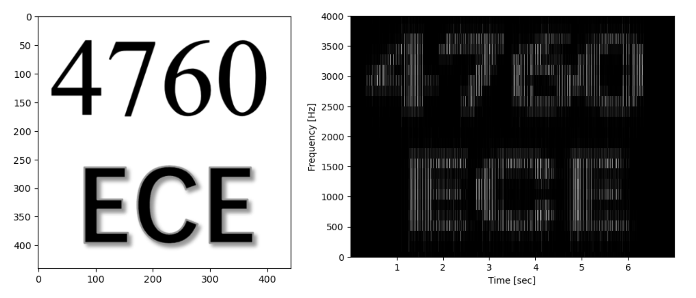
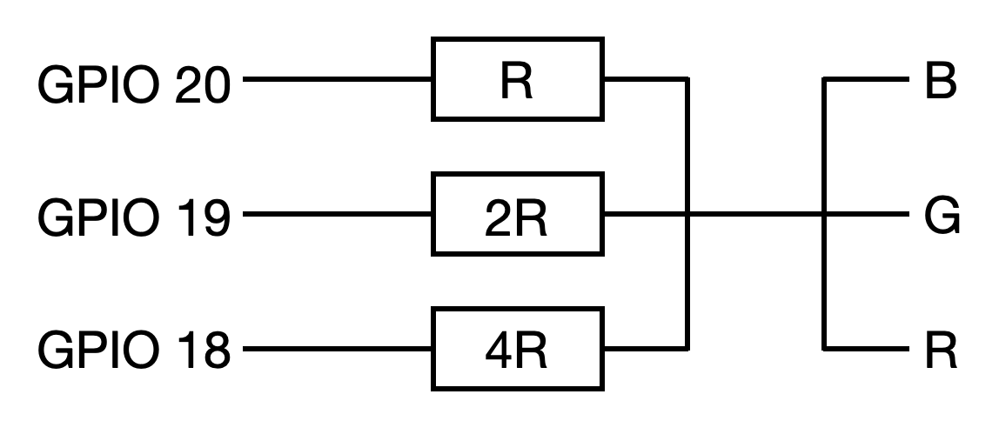
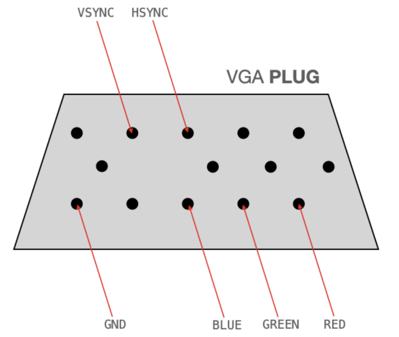
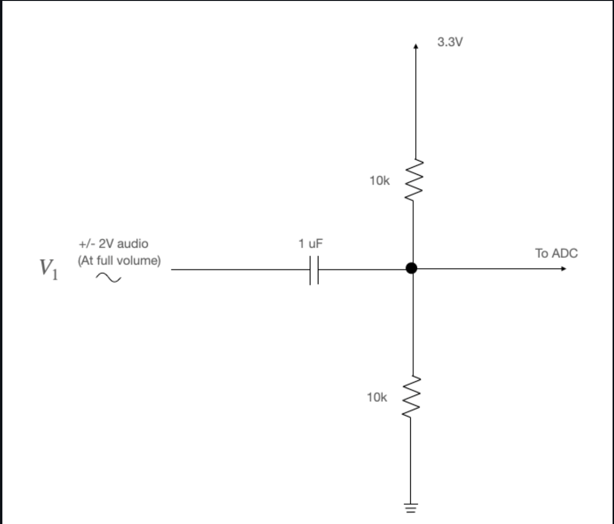
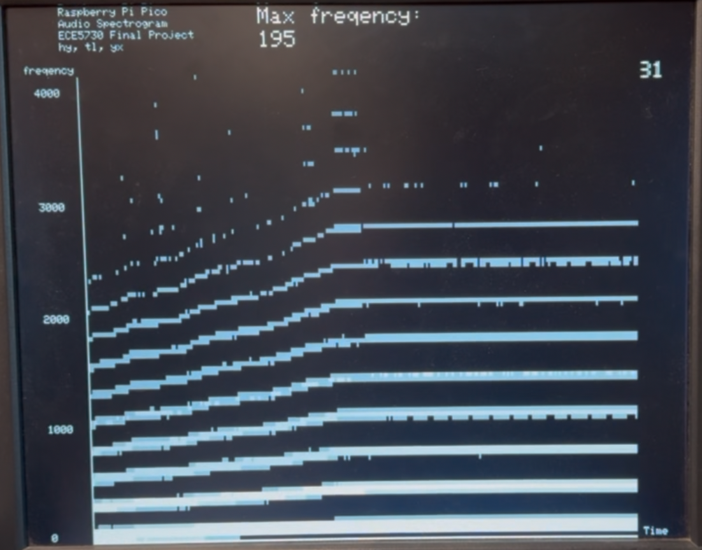
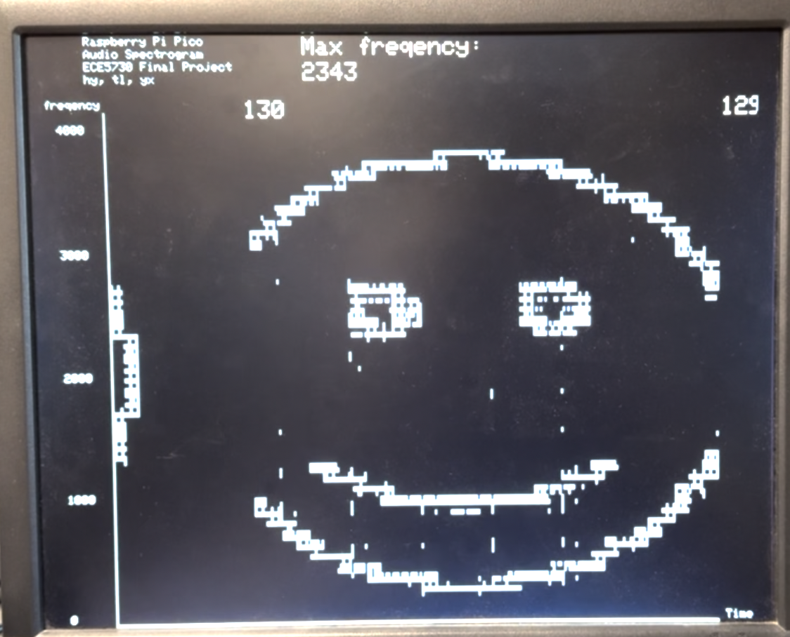

Real-Time Audio Spectrogram Analyzer
Han Yang (hy592), Yibin Xu (yx623), Tongyuan Liu (tl839)
Table of Contents
2.2 ADC and DMA
2.3 FFT
2.4 VGA Drawer
2.5 User Interface
2.6 Python Script for Audio Generator
3.1 VGA Display
3.2 High Pass Filter
3.3 Resources Used
4.1 Overview
4.2 FFT Function
4.3 VGA Display
4.4 User Interface
5.1 Accuracy and Speed of Execution
5.2 Safety
5.3 Usability
1 Introduction
This project aims to design and implement an interactive audio spectrogram analyzer that leverages the capabilities of Fast Fourier Transform (FFT) algorithms to analyze the spectrogram of real-time audio pieces and visually present on a gray-scaled VGA display. We also implemented a Python script to generate audio according to the given picture input. The generated audio contains many single-tone audios, with frequency and volume determined by the color depth of the image pixels. With these two designs, we are able to draw interesting pictures in our audio spectrogram analyzer, which is great fun to explore.
If the embedded linke doesn't work, you can also find our demo here: https://youtu.be/C8ed5-WB-MY?feature=shared
2 High-Level Design
In lab 1, we used the Merlin Bird ID App to successfully recognize our synthesized bird calls while displaying spectrograms, which was very interesting. So we want to design an audio Spectrogram Analyzer using a Raspberry Pi, and use Python scripts to create sound snippets whose spectrograms are fun to image. This project embarks on an innovative journey to develop an interactive music spectrum analyzer, utilizing the robust capabilities of FFT algorithms. Our primary objective is to intricately analyze musical compositions and dynamically showcase their spectral properties on a VGA display.

Figure 1. Simple Components Diagram
2.1 Workflow Overview
First we deal with the analog audio signal, which comes from the computer's 3.5 mm headphone jack (we use the PC to play sound). This signal is processed by a high-pass filter to eliminate the negative component of the sinusoidal waveform. This is because the Pico can only receive positive audio inputs, and the PC headphone jack plays audio from a voltage range of (-2 to 2 volts). These filtered signals are then split into sampling windows for subsequent processing. Our program performs a key process on this data: converting the audio data from the time domain to the frequency domain using the Fourier Transform algorithm. Next, the FFT data is presented as a power spectrum in a grayscale plot on a VGA display. There is also a user interface to control the mode of VGA drawing.
2.2 ADC and DMA
The analog-to-digital converter (ADC) of the Raspberry Pi microcontroller converts the continuous audio signal into a discrete signal. The sampled data is then transmitted by DMA through a FIFO to the CPU for further analysis. The configuration of the ADC and DMA is taken from the Hunter's Audio FFT demo code. The final audio to be transferred to the FFT function is sampled at a frequency of 10kHz with a sample buffer size of 256. This design reduces the amount of data to be processed while maintaining the maximum resolution in 10kHz/2=5kHz. The tradeoff is a lower frequency resolution.
2.3 FFT
Fast Fourier Transform(FFT) is one of the most important algorithms ever developed. It is the basic algorithm in most digital communication, audio, and image compression. Compared with Discrete Fourier Transform (DFT) in complexity
In software design, we mainly have two important functions, one is the FFT transformation that reads audio samples from ADC and DMA buffer, and then performs the FFT transformation of them. The other function is the VGA drawer, which calculates the log magnitude of frequency amplitude from FFT results, and draws them on the VGA display. These two functions are run on two cores of Raspberry Pi, which can speed up the program execution performance. To achieve that, a semaphore is used. When the FFT calculation is finished, the semaphore is activated so the VGA drawer can start drawing the spectrogram. In the end, we chose a 256-point FFT with a resolution of about 80 Hz.
2.4 VGA Drawer
The human perception of sound is logarithmic in nature. By taking the logarithm of the spectrogram values, we compress the dynamic range, making it easier to visualize and interpret features across a wide range of intensity levels. This step involves a quick logarithmic function, designed to minimize processing time without compromising on accuracy. This efficient conversion is key to maintaining the real-time interactivity of our analyzer. Finally, the Power Spectrum is rendered onto a VGA screen, and displayed as a spectrum analyzer figure. This visualization is presented in a nuanced 3-bit grayscale map, offering a detailed yet accessible view of the audio’s spectral characteristics.
2.5 User Interface
Our user interface uses Putty which runs on a PC. This primarily aims to allow control of the VGA drawing patterns. We provide these modes. The first is the normal plotting mode “Default”, where the VGA display will continuously plot the spectrum from left to right. Then there is a pause mode “Stop Display”, in which the VGA monitor stops plotting, and after the exit of the pause mode, a new spectrogram is plotted at the pause position. Another important mode “Stop When Fill the Screen” enters the pause mode after the VGA monitor has plotted an entire screen of spectrograms, which is very useful for our image demo.
The Spectrum Analyzer's user interface offers five distinct options:
“Default”: Resets all variables and flags, and redraws the spectrum on the VGA display.
“Clean Screen”: Halts current operations and clears the entire VGA display.
“Stop Display”: Freezes the display, stopping the drawing of new spectrum graphs.
“Stop When Fill the Screen”: Freezes the display once the cursor reaches the right edge of the screen.
“Change the Draw Speed”: Adjusts the drawing or updates the speed of the spectrum on the VGA display.
2.6 Python Script for Audio Generator
Inspired by lab1, the spectrogram can present some interesting images. Using Python script code, we generate the corresponding audio based on the input image, whose spectrogram is a low-resolution version of that image.

Figure 2. Original Image (left), Spectrogram of Generated Audio (right)
2.7 Hardware/Software Tradeoffs
There are not many hardware/software tradeoffs involved in our project. However, it is very important to consider code optimization in software. The FFT algorithm is computationally intensive, so as we wanted to achieve real-time display, we reduced the sample size and sacrificed the display resolution to significantly speed up the computation. In addition, we use approximations to do the computation faster, such as using fixed-point arithmetic instead of floating-point arithmetic, and using the Alpha max plus beta min algorithm to approximate the magnitude of the complex numbers. Also, consider that calculating the Log is very complicated, but in the actual display, the accuracy is not very important, because we only need to know in which range its log is. Therefore we use the fast logarithm calculation algorithm to approximate the calculation. Finally, we also utilize an overclocking technique in order to meet the time constraints of the FFT computation.
2.8 Discussion of Patents, Copyrights, and Trademarks
The hardware configuration of ADC, DMA, and software FFT algorithm implementation comes from the open-source demo code implemented by Hunter. The specific FFT algorithm is the Cooley-Tukey FFT algorithm. Fast Logarithmic Calculation Algorithm from Open Source Algorithms website, Bit Twiddling Hacks By Sean Eron Anderson.
3 Hardware Design
The Pi Pico is a dual-core ARM Cortex M0+ processor designed with a PR2040 chip. It runs at 25 Mhz clock frequency. The following peripherals of the port are used in the project.
3.1 VGA Display
We use a 3-bit color 640 * 480 VGA display. Since the VGA driver is already written, in order to display a grayscale spectrogram, we can just change the values given by the microcontroller to the GRB channels. This setup requires the RGB to receive voltages simultaneously ranging from 0V to ⅞*0.7V in increments of ⅛*0.7V, transitioning from black to white. The circuit diagram (Figure 3) shows that three resistors are used in parallel, with a total resistance of 330 ohms. Besides GPIO 18/19/20, GPIO 16 is connected to VGA HSync. GPIO 17 is connected to VGA VSync. VGA pin-outs are shown in Figure 4.

Figure 3. Circuit diagram for a grayscale spectrogram

Figure 4. VGA Pin-Outs
3.2 High Pass Filter
The audio output voltage ranges from -2V to 2V, which needs to be biased and scaled to 0-3.3V for ADC sampling. This can be achieved using the below-shown high-pass filter for biasing. GPIO 26 is connected to audio input.

Figure 5. High Pass Filter
3.3 Resources Used
PIO state machines 0, 1, and 2 on PIO instance 0
DMA channels 0, 1, 2, and 3
ADC channel 0
153.6 kbytes of RAM (for pixel color data)
4 Software Design
4.1 Overview
The software part of this project is developed based on the Audio FFT to VGA Display demo code provided by Prof. Hunter Adams. This is a protothread that uses an ADC to collect audio signal data and an FFT function to convert the audio signal from the time domain to the frequency domain. Then, in another protothread, we control the VGA to plot the spectrum. In this protothread, a quick log algorithm is used to approximate the log value of the given frequency amplitude. These two threads are run on the dual-core of Raspberry Pi to speed up the execution.
4.2 FFT Function
To compute the FFT of the input audio, we used the FFT code written by Prof. Hunter Adams. This algorithm utilizes fixed-point arithmetic and the Cooley-Tukey FFT algorithm to speed up the computation. There is also a trade-off between accuracy and computational effort by adjusting the size of the sample buffer. For this FFT program, we put it in a thread that runs independently with the VGA drawing thread on the two CPU cores of the Pico. The FFT we calculated is a 256-point one, resulting in 256/2 = 128 frequency points. Because the ADC sampling frequency is 10 kHz, the width of each frequency pointis 10 kHz/128 = 78.125 Hz. according to the Nyquist sampling, the cutoff frequency of is 10 kHz/2 = 5 kHz, which is the maximum frequency our spectrogram analyzer can display. After the FFT is being computed, we use the Alpha max plus beta min algorithm to approximate the magnitude of the complex numbers. After the FFT is computed, a flag is triggered to notify the thread that is controlling the VGA drawing the spectrogram ready to display.
4.3 VGA Display
To display the amplitudes of the various frequencies more visually on the VGA, we take the logarithm of the amplitude of each point. Since we only need to know the interval of the logarithmic value, we use a fast logarithmic lookup algorithm to obtain the integer part of the logarithmic value. This algorithm utilizes a binary right shift and a lookup table to quickly approximate the logarithmic value. After obtaining the logarithmic value of amplitude at the corresponding frequency point, the VGA can be controlled to plot at the corresponding point. Since we use 3 bits to describe the colors, we can draw 2^3=8 colors. As the value gets larger, the displayed color goes from black to white. Based on the lab 3 VGA Display demo code, we can easily modify and draw one column for the spectrogram. The VGA Display program is implemented in a thread, and draws a column each time receives a semaphore called vga_semaphore. In the VGA display, the horizontal coordinate is the time, the vertical coordinate is the frequency, and the color depth of each point indicates the interval in which its amplitude is located. The larger the value, the more the color changes from black to white (as shown in Figure 6).

Figure 6. Grayscale Spectrogram
4.4 User Interface
These functions are implemented in a similar way as lab2 and communicate with PC and Raspberry Pi via UART connection. Via a UART connection, we can implement a command line interface for user input to change the parameters. Our user interface program runs on a thread. They can do the non-blocking serial read/write so that read will not block other programs. This program accepts control commands transmitted by the user via serial communication and controls the mode of the VGA display. To control the VGA drawing, we use several flags. Such as stop_flag and fill_flag. when stop_flag is set, pause the drawing. When fill_flag is set, the VGA will pause after one screen of spectrogram is drawn.
4.5 Things We Tried That Didn't Work
In our design, we encountered challenges that prevented certain functionalities from working as anticipated.
First, our goal was to capture as wide a range of input frequency signals as possible. However, due to the performance constraints of our microcontroller, handling high-resolution frequency signals proved problematic. This means that subtle frequency variations or the presence of multiple sine waves in the input signal might not be accurately captured or displayed on the VGA screen.
Secondly, we attempted to implement a low-power saving mode for the device. The idea was to cease signal capture and spectrum display on the VGA screen when there's no audio signal input, and resume these activities once the signal is detected again. However, we faced an issue: in the absence of an audio signal, the frequency became inconsistent. Our initial strategy was to enter low-power mode if the frequency remained zero or unchanged for a certain period. To further refine this approach, we plan to incorporate a low-pass filter in the circuit. This should help in reducing noise signals, potentially stabilizing the frequency.
5 Results of the Design
To verify the functionality of the audio spectrum analyzer, we used some interesting open-source websites and programs we wrote. Firstly, we use the open-source website Online Tone Generator to play constant tone, we know that the spectrum of sine wave has only a single frequency, so we use it to verify the response and color plotting of our analyzer. The results show that our analyzer can correctly plot sine waves with frequencies from 10Hz to 5kHz. The colors plotted also correctly show 8 grayscale colors from black to white. Then we tested with square waves. A square wave consists of multiple amplitude decaying sinusoid waves, so the spectrum presented the brightest color centered at a given square wave frequency, with multiple progressively darker stripes around it. The experimental results are as expected.
5.1 Accuracy and Speed of Execution
A YouTube video of a real-time audio spectrogram was selected for testing the accuracy and speed of execution. The video displays a spectrogram of a complex piece of audio. Our sound spectrum analyzer correctly recognizes and displays the spectrogram of this audio in real-time with good resolution. All distinct peaks and frequencies of different intensities can be clearly displayed. The latency is almost negligible, which means human eyes cannot recognize the latency.
We then generated some audio corresponding to the images with a python script we wrote and ran the test. The test results show that for some simple line patterns, the performance is pretty good, and people can easily recognize them. For complex images, such as those with color fills, the display is weak. This is because the spectrogram of the audio generated by our python script only contains fixed frequencies, i.e., a low-resolution version of the image.

Figure 7. Spectrogram of Smile Face Image
5.2 Safety
We ensured safety all throughout the design and the execution of the entire process. This project did not suffer from any major safety issues because we are not utilizing any moving components or high voltages, nor are we taking any measurements of the human body. The only thing to be aware of might be that running our application for a long time might overheat the Raspberry Pi because we utilized overclocking techniques.
5.3 Usability
Our design can be easily used by everyone when the VGA display and audio receiving circuitry is properly connected to the Raspberry Pi. It is convenient to play the audio on the PC, use Putty and follow the instructions on the display to control the VGA display.
6 Conclusions
We successfully achieved most of our project goals. We were able to create a 3-bit grayscale spectrogram with a sampling rate of 10kHz. To make the project more interesting, we implemented a feature using Python to generate sounds from images. These sounds can be visualized on the spectrogram, and we can also hear the audio representation of the corresponding images. During this project, we were delighted to complete such an engaging project and simultaneously learned a lot of useful knowledge, including FFT (Fast Fourier Transform), quick log algorithms, fixed-point arithmetic, etc. If we undertake a similar project in the future, we might consider modifying the VGA driver to support 4-bit color or adding a microphone for sound collection.
6.1 Conformance with Applicable Standards
There is no applicable standard in our project.
6.2 Intellectual Property Considerations
We utilized the VGA driver and Audio FFT demo code provided by Hunter, which can be found on Hunter's homepage. Additionally, the songs we used for testing are open-source, free audio files from YouTube, ensuring that there are no copyright issues. The images used for generating the spectrogram and audio were also created by us, strictly adhering to others' intellectual property rights.
Appendix A
The group approves this report for inclusion on the course website.
The group approves the video for inclusion on the course youtube channel.
Additional Appendices
Hunter's Demo Code: Audio Spectrogram, Realtime Audio FFT to VGA Display with RP2040, Cooley-Tukey FFT
Code can be found here: Download Code
Budget Considerations: Everything was borrorwed from lab.
Quick Log Algorithm: http://graphics.stanford.edu/~seander/bithacks.html#IntegerLogLookup
Wiki: Spectrogram - wiki